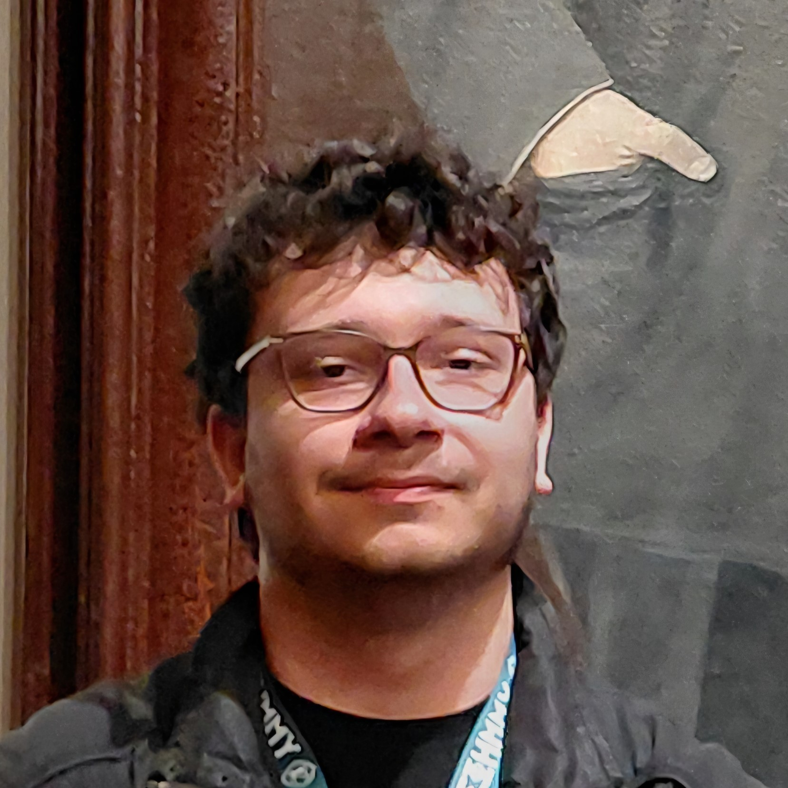

EDUCATION
University of Thessaly
Dept. of Computer Science and Biomedical Informatics
2024-Present (3rd year)
3rd High School of Kalamaria
2021-2024
Final Grade: 19.2/20 (Excellent)
TECHNICAL SKILLS
Hardware & Networking
PC Assembly and Repair, LAN/WLAN Networks, Cisco Packet Tracer
Web Development
HTML5, CSS3, JavaScript, WordPress (CMS)
Programming
Advanced: C, Java
Intermediate: Assembly, jQuery, LaTeX, MATLAB, PHP, Python, SQL
Basic: Arduino (C++)
Software
Adobe Creative Suite, Android Studio, Entersoft CRM, Google Workspace, IBM SPSS, MS Office Suite, Unity
CERTIFICATIONS (CISCO)
- IT Essentials: Hardware, Repair.
- Network Essentials: LAN, Security.
- Packet Tracer: IoT Simulation.
- Python Essentials: Programming.
LANGUAGES
English: Advanced Level
Greek: Main language - fluent
SOFT SKILLS
Communication • Organization • Responsibility • Leadership
ACHIEVEMENTS
- Editorial Team Member of school newspaper (2023-24).
- Honorary Distinction: Competition "The Holocaust and Greek Jews".
- International Youth Leadership Program (YMCA).
- Festival "Paizo-Dro-Motion" (YMCA/UN).
|

George Papageorgiou Dionysopoulos
Computer Science and Biomedical Informatics Student
PROFILE
Computer Science and Biomedical Informatics student, with a strong interest in technology, programming, and networking systems. Certified in computer hardware and networking (Cisco Networking Academy) with hands-on experience in web development. Seeking opportunities in web development, IT support/maintenance and software development.
PROFESSIONAL EXPERIENCE
Scheduler | OneForma (Centaurus Project) May 2026 – Sep 2026
- Coordinated participant scheduling and managed onboarding workflows for the project.
- Verified and validated consent documentation, specifically focusing on minors and their parents or legal guardians.
- Ensured strict compliance with data privacy guidelines and project-specific eligibility requirements.
PORTFOLIO & PROJECTS
tedxlamia.com | Web Development
- Developed the official TEDx website using WordPress and Divi, ensuring fully responsive design and implementing SEO best practices.
- Engineered a custom WordPress plugin using object-oriented PHP to manage interactive event programs.
- Built a custom drag-and-drop admin interface with live preview capabilities using JavaScript and jQuery UI.
- Designed a dynamic, glassmorphism-styled frontend timeline (HTML/CSS/JS) featuring custom shortcodes and real-time event progress tracking.
deousaepimeleia.com & nenadion.com | Web Development
- Designed and developed a website.
- Implemented visual design and basic SEO practices; ensured responsive design for mobile and tablet devices.
Simple File System (SFS) Core Implementation & Directory Support | C
- Architected a 400KB virtual disk with Superblock, Inode tables, and Bitmaps for low-level metadata and block-level space management.
- Engineered a core File API and Directory Management system to support standard file operations and filename-to-inode mapping.
IPC-based Auction Simulation System | C
- Developed a multi-process auction system using POSIX Shared Memory and Semaphores to facilitate synchronized communication between independent bidder and auctioneer processes.
- Implemented advanced signal handling and process coordination to manage real-time bidding flow and ensure graceful resource cleanup.
VOLUNTEERING
Web Development Team Coordinator | IEEE Student Branch Lamia Nov 2026 – Present
- Lead and mentor a student team, providing hands-on guidance and training in HTML, CSS, JavaScript, and SQL.
- Spearhead the design and development of the new official IEEE branch website, overseeing the project from concept to deployment.
- Coordinate team participation in technical projects, delegating tasks and fostering a collaborative learning environment.
Webmaster | IEEE Student Branch Lamia Nov 2026 – Present
- Manage and update the organization’s website and digital tools
- Maintain and consistently refresh web content to ensure accuracy and relevance.
- Ensure the overall security, stability, and smooth operation of the website.
Camp Staff Member | YMCA Saint Nikolas 2021–2025
- Supervised children aged 7-13, organized activities, and managed groups.
- Used CRM systems (Entersoft, Exelixis) for needs management and inventory tracking.
Robotics Presenter (Arduino) | Panhellenic STEM Competition 2025
"Can we survive on Mars?"
- Presented Arduino projects to students (Primary to High School level), demonstrated automation systems, explained code, and introduced basic robotics concepts.
|